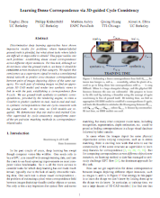

Learning Dense Correspondence via 3D-guided
Cycle Consistency
People
Abstract
Discriminative deep learning approaches have shown impressive results for problems where human-labeled ground truth is plentiful, but what about tasks where labels are difficult or impossible to obtain? This paper tackles one such problem: establishing dense visual correspondence across different object instances. For this task, although we do not know what the ground-truth is, we know it should be consistent across instances of that category. We exploit this consistency as a supervisory signal to train a convolutional neural network to predict cross-instance correspondences between pairs of images depicting objects of the same category. For each pair of training images we find an appropriate 3D CAD model and render two synthetic views to link in with the pair, establishing a correspondence flow 4-cycle. We use ground-truth synthetic-to-synthetic correspondences, provided by the rendering engine, to train a ConvNet to predict synthetic-to-real, real-to-real and real-to-synthetic correspondences that are cycle-consistent with the ground-truth. At test time, no CAD models are required. We demonstrate that our end-to-end trained ConvNet supervised by cycle-consistency outperforms state-of-the-art pairwise matching methods in correspondence-related tasks.
|

Paper
[CVPR'16
paper (10MB)] [
bibtex]
Presentation
[
pdf (9MB)]
[
keynote (70MB)]
Code
Demo code with caffemodel can be downloaded
here (68MB).
Acknowledgement
We thank Leonidas Guibas, Shubham Tulsiani, Saurabh Gupta and Guilin Liu for helpful discussions. This work was sponsored in part by NSF/Intel VEC 1539099, ONR MURI N000141010934, and a hardware donation by NVIDIA.